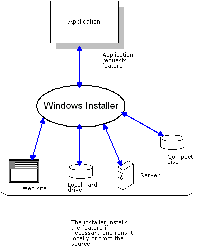

Component Management
The Microsoft® Windows® Installer reduces the total cost of ownership (TCO) of your applications by increasing the ability of your customers to manage and maintain application components during setup and runtime. Because the installation database tracks which applications require a particular component, which files comprise each component, where each file is installed on the system, and where component sources are located, developers can author packages providing the following benefits.
- Increased resiliency of applications. Use the installer to detect and reinstall damaged components without having to rerun setup. You can also use the installer to check the path of a component at runtime. This frees applications from dependency on static file paths which commonly differ between machines and can point to missing components. For more information, see Resiliency.
- Install-On-Demand features. These features are not installed during the initial setup but are specified in the database to be installed just-in-time for use if required by the application in the future. Users do not need to rerun setup. For more information, see Installation-On-Demand.
- Advertise shortcuts to features, applications, or entire products in the user interface without actually installing these. Users can install these on-demand by using the shortcuts. Users can also remove features, applications, or entire products on-demand. For more information, see Advertisement.
- Customize installations to user's needs. An administrator can apply transforms to the database that tailor the installation for a particular group of users. For more information, see Customization.
- Easier deployment of application updates. Use the installer to update your products. For more information, see Patching and Upgrades.
- Display shortcuts to features that are run locally together with shortcuts to features run from a remote source. Because the installation database specifies the run context of each feature, visibly equivalent entry points can be presented to users if desire.
- Keep usage metrics on features. Developers can provide an installation package that keeps a usage count of a feature by all client applications and removes components that are not being used.
- Incorporate installations into applications. Developers can incorporate the component management capabilities of the installer into their applications by authoring an installation package and by using the Installer Functions in their application code. The following figure illustrates an application requesting the installation of a feature.


Platform SDK Release: August 2001